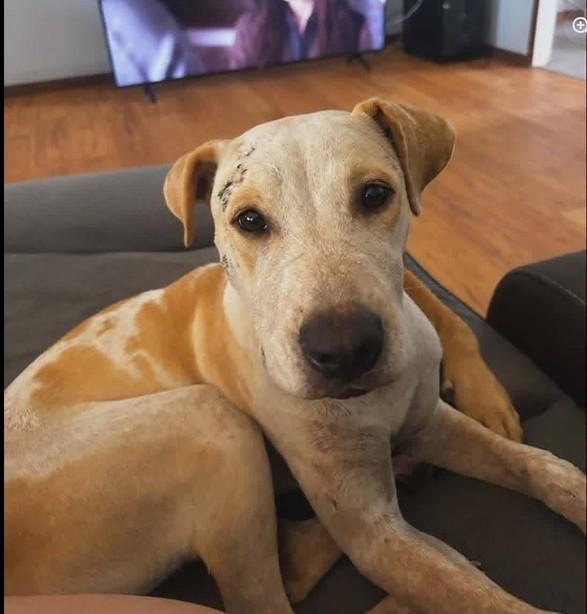

Adopting a rescue animal is one of the most rewarding experiences, and at Cape Animal Protection Shelter (CAPS), we are committed to helping both pets and people find their perfect match. Our goal is not simply to find a home for every animal, but to ensure each animal is placed in a safe, loving, and suitable environment where they can thrive for life.
We understand that bringing a new pet home is a significant adjustment for both the animal and their new family. This is why we educate adopters on the "3-3-3 Rule" of rescue animals:
• 3 Days – Your new pet may feel overwhelmed, nervous, or unsure as they adjust to their new surroundings.
• 3 Weeks – Your pet begins to settle into a routine, build trust, and become more comfortable within the household.
• 3 Months – Your pet feels secure, their true personality emerges, and they become a fully integrated member of the family.
To help ensure a successful transition, CAPS offers a 4-week adoption trial period. This trial is not only for the adopter—it is also an opportunity for CAPS to ensure the placement is the right fit for both the animal and the family. During this time, our team remains available to provide guidance, support, and advice to help set everyone up for success.
When you adopt through CAPS, you are not just giving an animal a second chance—you are gaining a loyal companion while helping us continue our mission of rescuing and rehoming animals in need.
If you click here you will see the details of the dogs we have available, or even better, come down to the shelter during opening hours, meet some of the characters, do some walking, and try some Jail Breaks to find your perfect match.

Click the link below to fill in our online form and start the adoption process, or give our caretakers a call to chat through your options.
Adoption Registration Form ↗Prefer to chat first? Get in touch with us to find out more.
See the FAQs below to find out more. Click a question to expand the answer.